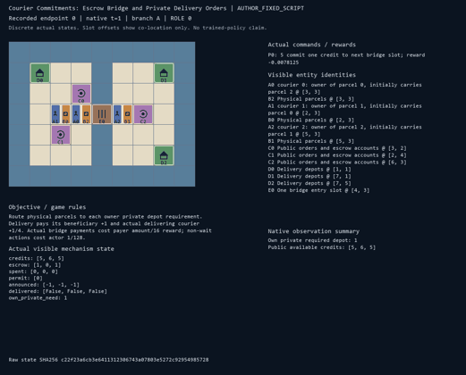
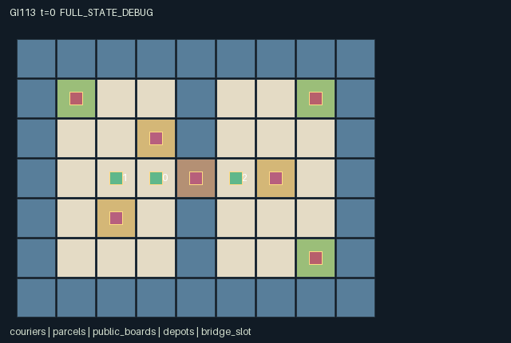

GI113 / SPATIAL
快递承诺桥
快递员竞价获取稀缺的下一步过桥许可，并围绕私有投递要求协商货物交接。
Original saved demonstration
Recorded native state, often authored scripts or interventions; information scope and failures are preserved in the original provenance. This is a saved demonstration, not live browser play.

Release verification episode
Untrained uniform legal actions. Actual JAX state sampled along the full original episode; full-state debug camera. No human performance or learning claim.

Run this game
crucibles play --game 113
Start Python locally, then open the address printed by the terminal. Installation, multiplayer, takeover and keyboard controls →
Objective, rewards & ending
Exact task contract
{
"objective": "Route physical parcels to each owner private depot requirement. Delivery pays its beneficiary +1 and actual delivering courier +1/4. Actual bridge payments cost payer amount/16 reward; non-wait actions cost actor 1/128.",
"natural_termination": "All three fixed parcel identities have been delivered to their correct depots, or truncate at 96 otherwise. At terminal, outstanding unused-slot deposits are cancelled and refunded.",
"interaction": "Simultaneous bounded bids reserve one physical bridge entry slot, highest bid wins with rotating deterministic tie order, winner pays and losers recover deposits. Parcel swaps and consent-based transfers can save crossings. Posting an order changes other carriers available information.",
"observation_access": "Private need[i] is observed only by agent i and is never a scene attribute. Posted orders, credits, escrow, payments, permit and delivery registration are public. Agent/active parcel payloads are visible within L1 radius 3. Delivery legal masks depend on any depot, never on hidden target correctness."
}Declared per-step reward bounds: -1 to 2. Observability: partially_observable.
Rules
- Three couriers start with one another parcels and six credits each. Each owner alone knows its required depot until posting it.
- At even clock values, a courier on either bridge queue square may lock a bid of one or two credits.
- The largest bid prepares the sole next-step bridge entry permit. Ties rotate by auction round; zero bids give no permit.
- On the odd step, the winner pays its locked bid even if it does not enter; losers receive refunds. A bridge occupant can leave without a new bid.
- Adjacent couriers may atomically swap parcels only if both choose SWAP. A one-way handoff requires OFFER and empty-handed ACCEPT.
- Posting at your own board makes your actual order public. At any depot, delivery is legal to attempt; only the true target succeeds.
- Each delivered parcel pays its owner +1 and its actual courier +1/4. Paid credits cost amount/16 and non-wait actions cost 1/128.
- All deliveries end the episode; otherwise step 96 truncates. Unused outstanding deposits are refunded at termination. Role views conceal undisclosed orders.
Original mechanism document (historical status wording retained)
# Courier Commitments: Escrow Bridge and Private Delivery Orders Status: **AUTHORED_NOT_EXECUTED**. Source SHA-256: 5149a2bd96aa9756f1e81116bd66469c5643fa12962e5cfdc3a0d7cf6673be79. A/O/U/H = 3/115/13/96. All playthroughs and paired interventions are **UNEXECUTED_AUTHOR_HYPOTHESIS**. ## Board, parcels and enforceable commitments Three couriers move on a 9 by 7 board split by a river, with exactly one walkable bridge square at (4,3). The two queue squares are (3,3)/(5,3). Three persistent parcel identities start held by different beneficiaries: courier 0 carries parcel 2, courier 1 carries parcel 0, and courier 2 carries parcel 1. Every courier has a one-parcel capacity and six credits. Public depots are indexed 0=(1,1), 1=(7,1), 2=(7,5). At even input t, a queue occupant can commit one or two available credits. The amount is immediately removed from available credits and recorded as escrow. Simultaneous bids select one next-step entry permit: highest positive bid wins, ties use agent order rotated by auction round floor(t/2). At odd input t, the winner's escrow is transferred to cumulative spent, losers' escrow returns to their available credits, and the escrow clears. Payment occurs even if a winner leaves the queue, stays put, or finds the bridge occupied. Only the prepared winner can enter the bridge during this odd step. Leaving an occupied bridge never needs a fresh permit. Conservative collision rules prevent swaps or moving into another courier's old cell. At terminal completion or horizon, any just-created deposit for a future unusable slot is cancelled and refunded. This is a cancellation, not a fictitious payment. For each courier, credits + escrow + spent stays exactly six. Per-agent credits cannot be transferred or borrowed. The board's displayed bid, balance, payment and permit are these actual ledger fields. ## Exchanges, private information and payoff Picking up or dropping reassigns the same parcel identity. OFFER needs an adjacent empty ACCEPT recipient. Two adjacent loaded couriers can instead both choose SWAP; it exchanges the two carrier assignments atomically, with rotating pair selection and at most one swap per courier in that step. A unilateral offer or swap is not enforceable against an unconsenting recipient and makes no transfer. A reset-key permutation assigns one distinct private depot requirement to each parcel owner. Owner i sees only need[i] directly. Holding someone else's parcel does not reveal that private order. Posting beside one's own public board exposes the actual need[i] in announced[i], which then enters every agent's public observation and the board display. This is an executable information release, not textual negotiation. Delivery is allowed to attempt whenever a courier carries a parcel while standing at any depot. Its legal mask never checks the undisclosed target, avoiding a private-information side channel. The step succeeds only at the real target; a wrong attempt keeps the physical parcel. Successful delivery pays the beneficiary +1 and the actual deliverer +1/4, including both components when they are the same person. A paid bridge bid costs the payer bid/16 in reward and every sanitized non-wait action costs the actor 1/128. Swaps, bids and announcements alone do not pay a cooperation bonus. ## Partner-dependent choices and boundaries A courier can bid aggressively to reserve a time-sensitive crossing, concede and recover its deposit, swap cargo to save a crossing, carry another owner's parcel for the delivery bonus, or release its private order so another carrier can route it. A larger competing bid changes another agent's actual next legal movement mask, and a mutual swap changes both future destinations. Occupying the bridge can obstruct a paid winner. Credit exhaustion can leave an undelivered parcel on the wrong bank. These are substantive shared physical/inventory/information effects, not three independent path-following tasks. Fixed action witnesses include a paid crossing, a higher-bid alternative, a mutual swap and an order posting; they do not assert all deliveries or any seed's solvability. Different bridges, budgets, target distributions or tie schedules could alter strategy in separately specified future tasks. This source implements only this finite board and the stated private-order permutation. ## Visibility and invariants The map, board accounts, posted orders, permit and delivery registrations are public. Agents and active parcels are locally visible within Manhattan radius three. The private need array never appears in entity attributes or event channels; each role sees only its own scalar in the observation. Full-state debugging must be separate. Public depot IDs and role-to-board identities are fixed map conventions. Exactly three parcel identities persist. A parcel has at most one carrier, no courier carries two, and delivered parcels become inactive and uncarried at the correct depot. Credits, escrow and spent are nonnegative and sum to six for each courier. At most one positive-bid permit exists, no agent can enter the bridge without that permit at the proper phase, and distinct agent positions are preserved by conservative collision checks. These are source-reasoned declarations pending real kernel tests. ## Boundary, invalid actions and terminal behavior The native interface is GeneratedEnv.reset(key), observe(state), legal_actions(state), and raw_step(key, state, int32[A]). Native learning receives only float32[A,O] observations and bool[A,U] masks. Out-of-range or masked-illegal actions become action 0 without action cost. Joint conflicts can still prevent legal attempted actions from succeeding. All roles remain active until joint completion; there are no individually terminated roles. At joint completion, only no-op is legal. A nonterminal step increments scalar int32 t exactly once. Natural completion takes precedence over the horizon. An already-terminal raw call preserves every state leaf, clock, observation and terminal cause; it returns zero float32 rewards and all-true dones. No raw autoreset occurs. The agent-keyed public JaxMARL adapter belongs to the separate trusted engineering layer: use agent_0 through agent_2, preserve row/action order and masks, and set the done dictionary __all__ from info.done_all. The raw array contract and frozen learner are unchanged. Adapter execution and compatibility are not claimed here. State indices, sentinels, counts, stages and temperatures use int32; visibility/termination use bool; observations/rewards use float32. All normalization divisors are powers of two. This boundary representation does not replace a previously specified random distribution. The PRNG key is not copied into state. Reset uses only jax.random.permutation(key,3) to assign a distinct private depot index to each owner. No key is stored in state. Steps are deterministic given their state/actions; the step key is accepted but unused. The map is public knowledge. Role rendering must honor the same entity visibility masks as native observations and suppress hidden attributes. Only public channels appear in events; private source leaves are not display attributes. Full-state debug views require a separate label. Scene positions, active flags, visibility and attributes bind real state; no presentation-generated transitions or executable markup occur. ## Literal source evidence - Private requirements use only the supplied reset key. candidate.py:L50-L51 (exact excerpt SHA-256 611e8cf50848945cb0c795ccc0090d0e8a3a8957ee30fc7dbdbb377da7a6bf83). - Tie rotation and prepared access are deterministic from escrow and round. candidate.py:L18-L22 (exact excerpt SHA-256 6035274d5f978f6548f3fc0ca525a38692b84fd9069ef23bddb0bcc568496dec). - Physical bridge entry obeys permit and phase in the legal movement mask. candidate.py:L73-L75 (exact excerpt SHA-256 154480bbc36d0d27f3e18835bee7fa2c3ed219cc3d3ab2016a0b83f5fe9b6aac). - Legal delivery does not test private destination correctness. candidate.py:L95-L96 (exact excerpt SHA-256 84d80029bfcf672639ac2b517511598f319dcc7be61c8c8b38413fd07124c169). - Only own private need enters each observation row. candidate.py:L120-L122 (exact excerpt SHA-256 d13d1a76fe0450027993092febe979b92117d729309b72c72fc1f20f2ade7bdd). - Escrow is reserved, winner payment enforced and losers refunded. candidate.py:L129-L138 (exact excerpt SHA-256 4b5f59451ee9cd7dee9a09d7351b9eee407d481ce9f64ae855cde66b31e02aca). - Both partners must choose an atomic swap, and one courier cannot swap twice. candidate.py:L171-L183 (exact excerpt SHA-256 2acdec068164e180a7570e82763859761318266843c4dc284fd2dc0a9302a341). - Posting changes public announced data and delivery tests the real private requirement. candidate.py:L185-L198 (exact excerpt SHA-256 d01993ab07731819867befcd0426b944e7fc2799d37f98450e6cced1b69ca058). - Unused deposits refund at terminal and raw state absorbs. candidate.py:L208-L215 (exact excerpt SHA-256 e66c03412399ac117916384100f6a71036ce450aad6fc055344e5cc54e40b290). ## Interface method locations - moves: candidate.py:L12-L13. - inventory: candidate.py:L15-L16. - auction_winner: candidate.py:L18-L22. - refresh: candidate.py:L24-L32. - reset: candidate.py:L34-L65. - move_options: candidate.py:L67-L75. - legal_actions: candidate.py:L77-L99. - observe: candidate.py:L101-L122. - raw_step: candidate.py:L124-L215. ## Reference attribution and limits Original rules and kernel were authored for this assigned design. No upstream implementation code, layouts, assets, sprites or trained parameters were copied. JaxMARL's README supplied the agent-keyed dictionary and parallel-action integration convention. Pgx's README supplied board-state, explicit legal-mask and external-random-key API reference. Craftax's README supplied the general example of executable spatial resources and staged game mechanics in JAX. PureJaxRL is an algorithm implementation reference, not a new environment library. The supplied Craftax_Baselines PPO-RNN header credits PureJaxRL; it was consulted only as baseline/integration reference and was not copied or substituted for the frozen learner. No reference performance claim is evidence about these games. Snapshot identity was checked in full; consulted passages were API/overview material and the first 120 lines of the PPO-RNN reference. - references\JaxMARL_README.md: [official snapshot origin](https://github.com/bold-lab-ai/JaxMARL/blob/main/README.md), SHA-256 6649d04f5ed05d620e78e8416a00d4db841cf2633ae60fdb3c9729e037a71c15; verified 12438 bytes. - references\Pgx_README.md: [official snapshot origin](https://github.com/sotetsuk/pgx/blob/main/README.md), SHA-256 153f44999e55d5df3e51e13dee6ef418cc9704ddfa26206f1dc5789b9cbbf8df; verified 17543 bytes. - references\PureJaxRL_README.md: [official snapshot origin](https://github.com/luchris429/purejaxrl/blob/main/README.md), SHA-256 d5f40182c924a42cec820931e61a7d5070e48c4c8413c7d16455abc6ea0ef6b0; verified 5023 bytes. - references\Craftax_Baselines_ppo_rnn.py: [official snapshot origin](https://github.com/MichaelTMatthews/Craftax_Baselines/blob/main/ppo_rnn.py), SHA-256 5f93e6a7c3a1e0c551831d75be311735ba495dfdecae51787a1c03a27b1cd011; verified 18983 bytes. - references\Craftax_README.md: [official snapshot origin](https://github.com/MichaelTMatthews/Craftax/blob/main/README.md), SHA-256 7f9757a2047143cf183f7e2e84851a740f386af80dbee050c89b316d66a3d3ff; verified 12388 bytes. ## What was and was not checked Only AST parsing, the supplied whitelist, JSON manifest validation, scene-schema validation, declared-state-key agreement, source byte cap, hashes and script integer-vector structure were checked. The candidate was never imported, compiled, run or numerically simulated. JAX and NumPy were absent from the checker process imports. Reset/step shapes and dtypes, eager/JIT/vmap parity, numerical bounds and conservation under execution, repeated-seed replay, trajectory legality, real paired effects, absorbing execution, rendering, playback/pause/step, public adapter, policy training, solvability and meta-learning remain unexecuted. No acceptance score, success-rate threshold, ranking or final-test information was used.
Commands
Roles & abilities
agent_0 courier 0: owner of parcel 0, initially carries parcel 2
agent_1 courier 1: owner of parcel 1, initially carries parcel 0
agent_2 courier 2: owner of parcel 2, initially carries parcel 1
Observation permissions
Training receives only the original observation rows. Role cameras use declared visibility; debug cameras are explicitly marked. Local benchmark records log debug exposure and role takeover history.
Exact observation layout
[
{
"slice": [
0,
3
],
"meaning": "Self courier identity one-hot",
"visibility": "self"
},
{
"slice": [
3,
5
],
"meaning": "Public [t/128,t modulo 2]; even commits, odd settles",
"visibility": "public"
},
{
"slice": [
5,
6
],
"meaning": "Only this agent private parcel destination, depot index/4",
"visibility": "self"
},
{
"slice": [
6,
15
],
"meaning": "Three public account blocks [credits/8,escrow/2,spent/8]",
"visibility": "public"
},
{
"slice": [
15,
18
],
"meaning": "Three public posted order values (announced+1)/4; zero means undisclosed",
"visibility": "public"
},
{
"slice": [
18,
19
],
"meaning": "Public prepared bridge permit (permit+1)/4",
"visibility": "public"
},
{
"slice": [
19,
22
],
"meaning": "Three public delivered flags in parcel-owner order",
"visibility": "public"
},
{
"slice": [
22,
34
],
"meaning": "Three local agent blocks [visible,x/8,y/8,(carry+1)/4]; L1 radius 3, hidden payload zero",
"visibility": "local"
},
{
"slice": [
34,
52
],
"meaning": "Three parcel blocks [visible,x/8,y/8,owner/4,(carrier+1)/4,delivered]; local and active, hidden payload zero",
"visibility": "local"
},
{
"slice": [
52,
115
],
"meaning": "Public 7x9 board flattened y-major, tile value/4",
"visibility": "public"
}
]Entity visibility & attributes
[
{
"id": "couriers",
"kind": "agent",
"count": 3,
"position": [
"agent_pos"
],
"active": [
"agent_active"
],
"visibility": [
"agent_vis"
],
"attributes": [
{
"state_path": [
"carry"
],
"meaning": "Carried parcel index; -1 means empty",
"display": "category"
}
]
},
{
"id": "parcels",
"kind": "object",
"count": 3,
"position": [
"parcel_pos"
],
"active": [
"parcel_active"
],
"visibility": [
"parcel_vis"
],
"attributes": [
{
"state_path": [
"parcel_owner"
],
"meaning": "Beneficiary agent index",
"display": "category"
},
{
"state_path": [
"parcel_carrier"
],
"meaning": "Carrier index; -1 means ground",
"display": "category"
}
]
},
{
"id": "public_boards",
"kind": "landmark",
"count": 3,
"position": [
"board_pos"
],
"active": [
"board_active"
],
"visibility": [
"board_vis"
],
"attributes": [
{
"state_path": [
"announced"
],
"meaning": "Posted depot index; -1 means not disclosed",
"display": "category"
},
{
"state_path": [
"credits"
],
"meaning": "Available public credits",
"display": "bar"
},
{
"state_path": [
"escrow"
],
"meaning": "Current locked bid",
"display": "bar"
},
{
"state_path": [
"spent"
],
"meaning": "Cumulative credits paid to bridge",
"display": "number"
}
]
},
{
"id": "depots",
"kind": "landmark",
"count": 3,
"position": [
"depot_pos"
],
"active": [
"depot_active"
],
"visibility": [
"depot_vis"
],
"attributes": [
{
"state_path": [
"depot_id"
],
"meaning": "Public depot index",
"display": "category"
}
]
},
{
"id": "bridge_slot",
"kind": "gate",
"count": 1,
"position": [
"bridge_pos"
],
"active": [
"bridge_active"
],
"visibility": [
"bridge_vis"
],
"attributes": [
{
"state_path": [
"permit"
],
"meaning": "Prepared entry permit for next step; -1 means none",
"display": "category"
}
]
}
]Actual verification & provenance
Per-game execution receipt
{
"game": "gi113",
"status": "PASS",
"verification_revision": 2,
"source_sha256": "5149a2bd96aa9756f1e81116bd66469c5643fa12962e5cfdc3a0d7cf6673be79",
"seed": 20261101,
"runtime": {
"jax": "0.4.38",
"numpy": "1.26.4",
"devices": [
"TFRT_CPU_0"
]
},
"dimensions": {
"num_agents": 3,
"observation_size": 115,
"num_actions": 13,
"max_steps": 96
},
"checks": {
"eager_reset": {
"status": "PASS",
"seconds": 1.827908992767334
},
"observation_spaces_legal_masks": {
"status": "PASS",
"seconds": 1.3176279067993164
},
"eager_step": {
"status": "PASS",
"seconds": 4.194256544113159
},
"jit_reset": {
"status": "PASS",
"seconds": 0.3521740436553955
},
"jit_step": {
"status": "PASS",
"seconds": 1.9003922939300537
},
"eager_jit_integer_parity_float_measurement": {
"status": "PASS",
"seconds": 0.001005411148071289
},
"jit_vmap_reset": {
"status": "PASS",
"seconds": 1.0526299476623535
},
"jit_vmap_step": {
"status": "PASS",
"seconds": 2.6364736557006836
},
"outer_autoreset_api": {
"status": "PASS",
"seconds": 1.6648669242858887
},
"full_original_horizon_episode_and_render": {
"status": "PASS",
"seconds": 1.0076823234558105
}
},
"human_scores": null,
"browser_controls": "PENDING",
"failures": [],
"elapsed_seconds": 16.55163049697876,
"float_parity_max_abs": 0.0,
"numerical_parity": "EXACT",
"raw_terminal_absorbing": "PASS",
"terminal_outer_reset": "PASS",
"episode_steps": 96,
"scripted_random_returns": [
-0.6328125,
-0.71875,
-0.609375
],
"terminal": true,
"demo_information": "FULL_STATE_DEBUG",
"demo_frames": 25,
"render_roles_checked": 3
}Chromium control verification
{
"game": "gi113",
"status": "PASS",
"human_scores": null,
"engineering": true,
"checks": [
"catalog_selected_and_real_native_reset",
"dom_queue_and_native_step",
"second_participant_ownership_and_native_joint_step",
"all_roles_individually_controllable_no_role_cap",
"explicit_debug_camera",
"release_to_pure_ai_without_reset"
],
"ui_sha256": "15b5861d23b3c42811865c954d5a988280bbfd21cf8e93754be2437a027158c5",
"seconds": 6.213864326477051
}Original identity and file hashes
{
"id": 113,
"key": "gi113",
"title": "快递承诺桥",
"summary": "快递员竞价获取稀缺的下一步过桥许可，并围绕私有投递要求协商货物交接。",
"tags": [
"通行竞价",
"私有订单"
],
"family": "spatial",
"dimensions": {
"num_agents": 3,
"observation_size": 115,
"num_actions": 13,
"max_steps": 96
},
"source_sha256": "5149a2bd96aa9756f1e81116bd66469c5643fa12962e5cfdc3a0d7cf6673be79",
"manifest_sha256": "0063c38907ff379c7c2768c617d70a3870290b27bb6016a4c48d5ea4fb38d27c",
"files": [
{
"file": "candidate.py",
"sha256": "5149a2bd96aa9756f1e81116bd66469c5643fa12962e5cfdc3a0d7cf6673be79",
"bytes": 13516,
"origin": "work/exp_2/game_incubator_v3/community_games222_225_visualization_root222_v1/native154_candidate/registry/v2/games/game-v3-00113/candidate.py"
},
{
"file": "manifest.json",
"sha256": "0063c38907ff379c7c2768c617d70a3870290b27bb6016a4c48d5ea4fb38d27c",
"bytes": 13880,
"origin": "work/exp_2/game_incubator_v3/community_games222_225_visualization_root222_v1/native154_candidate/registry/v2/games/game-v3-00113/manifest.json"
},
{
"file": "scene.json",
"sha256": "bcf2b64fec382e7060a35cf15d74115559f7c6ff7f8eb0f815a2139d92035693",
"bytes": 7748,
"origin": "work/exp_2/game_incubator_v3/community_games222_225_visualization_root222_v1/native154_candidate/registry/v2/games/game-v3-00113/scene.json"
},
{
"file": "mechanism.md",
"sha256": "fbd879c04f5e82254be78d2eb84fa6890edc4e3416884f94e618d23606d4f2b0",
"bytes": 12227,
"origin": "work/exp_2/game_incubator_v3/sources/game-v3-00113/attempt_00/mechanism.md"
},
{
"file": "playthrough.json",
"sha256": "b44794e24c5e258fda45c6188e7750c108f14f59ea7a234959409e25ee98dfee",
"bytes": 4042,
"origin": "work/exp_2/game_incubator_v3/sources/game-v3-00113/attempt_00/playthrough.json"
}
],
"original_status": "NATIVE154_REFERENCE",
"original_saved_replay": true,
"release_validation": "PASS",
"human_scores": null,
"browser_validation": "PASS"
}